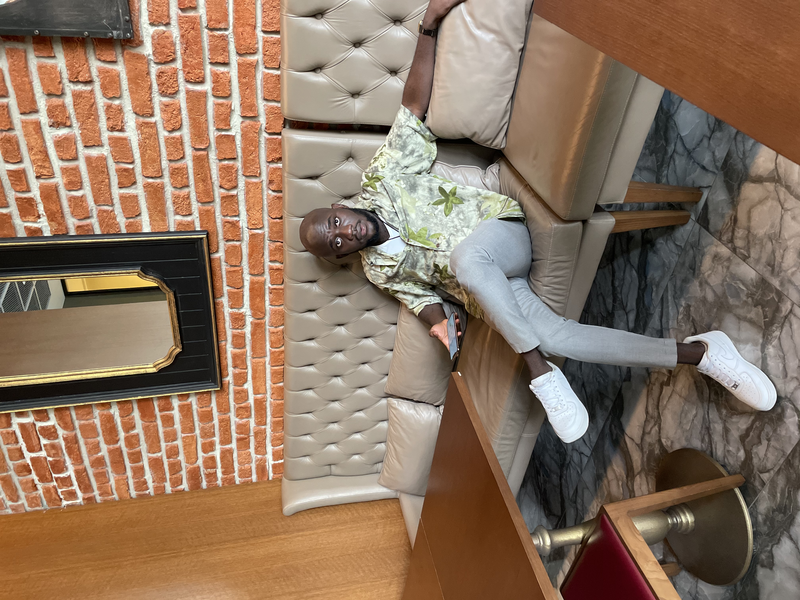

Spencer Appiah-Howard | wdd130
Hi there! Welcome to my page. My name is Spencer Appiah-Howard and I'm from ghana. I am really excited for this programming journey and can't wait to see the joys of it.
Hi there! Welcome to my page. My name is Spencer Appiah-Howard and I'm from ghana. I am really excited for this programming journey and can't wait to see the joys of it.